5. Support Vector Machine
Contents
5. Support Vector Machine¶
“Support Vector Machine” (SVM) is a supervised learning machine learning algorithm that can be used for both classification or regression challenges. However, it is mostly used in classification problems, such as text classification. In the SVM algorithm, we plot each data item as a point in n-dimensional space (where n is the number of features you have), with the value of each feature being the value of a particular coordinate. Then, we perform classification by finding the optimal hyper-plane that differentiates the two classes very well (look at the below snapshot).
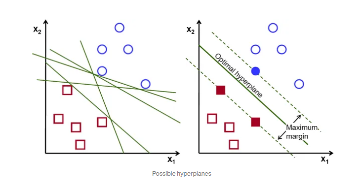
To separate the two classes of data points, there are many possible hyperplanes that could be chosen. Our objective is to find a plane that has the maximum margin, i.e the maximum distance between data points of both classes. Maximizing the margin distance provides some reinforcement so that future data points can be classified with more confidence.
The linear classifier in SVM is, quite simply, a line that classifies. It’s a line that distinguishes between 2 ‘types’ of data, like positive sentiment and negative language. This gives you control over data, allowing you to easily categorize and manage different data points in a way that’s useful too.
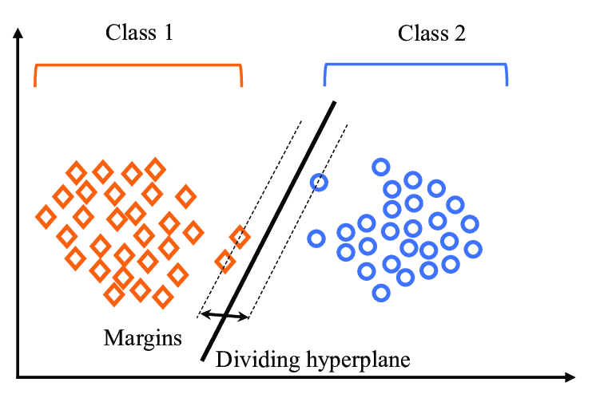 Illustration of SVM Algorithm with number of classifiers is 2
But support vector machines do more than linear classification – they are multidimensional algorithms, which is why they’re so powerful. Using something called a kernel trick, which we’ll look at in more detail later, support vector machines are able to create non-linear boundaries. Essentially they work at constructing a more complex linear classifier, called a hyperplane.
The objective of SVM algorithm is to find a hyperplane in an N-dimensional space that distinctly classifies the data points, so that we can easily put the new data point in the correct category in the future.
First, let us look at the illustration of the dimensional space in order to understand how the algorithm behave with a different numbers of input features.
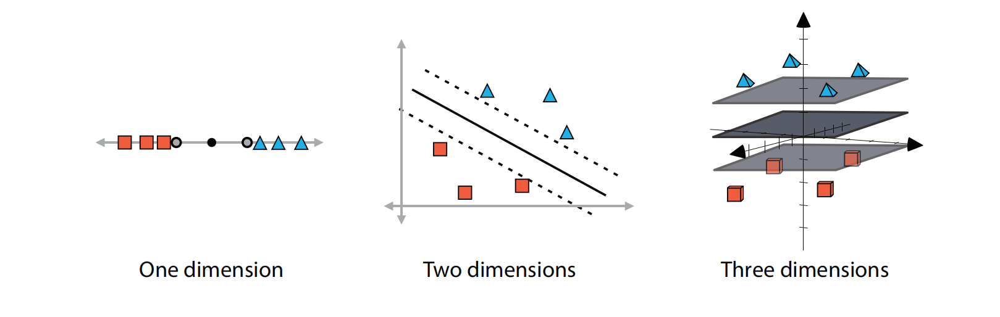
Linear boundaries for datasets in one, two, and three dimensions. In one dimension, the boundary is formed by two points, in two dimensions by two lines, and in three dimensions by two planes. In each of the cases, we try to separate these two as much as possible. The middle boundary (point, line, or plane) is illustrated for clarity.
The dimension of the hyperplane depends upon the number of features(number of classifications). If the number of input features is two, then hyperplane will be a straight line. If the number of input features is three, then the hyperplane becomes a 2-Dimensional plane. It becomes difficult to imagine when the number of features exceeds three.
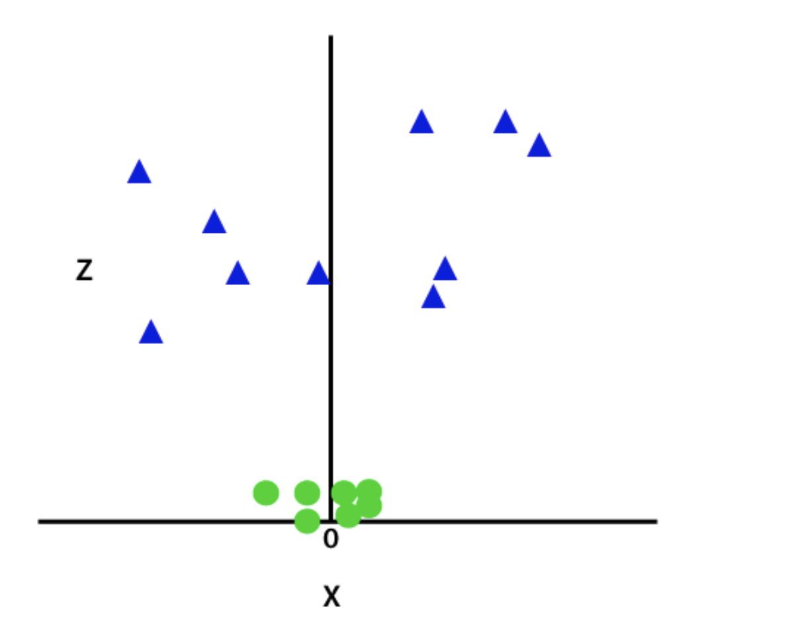
Image above is the illustration of the dimensional space when the number of classifications (label value/target value) is three.
So now, SVM will divide the datasets into classes in the following way. Consider the below image:
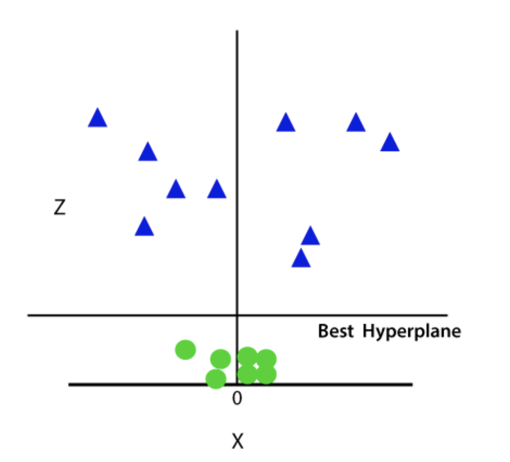
Since we are in 3-d Space, hence it is looking like a plane parallel to the x-axis. If we convert it in 2d space with z=1, then it will become as:
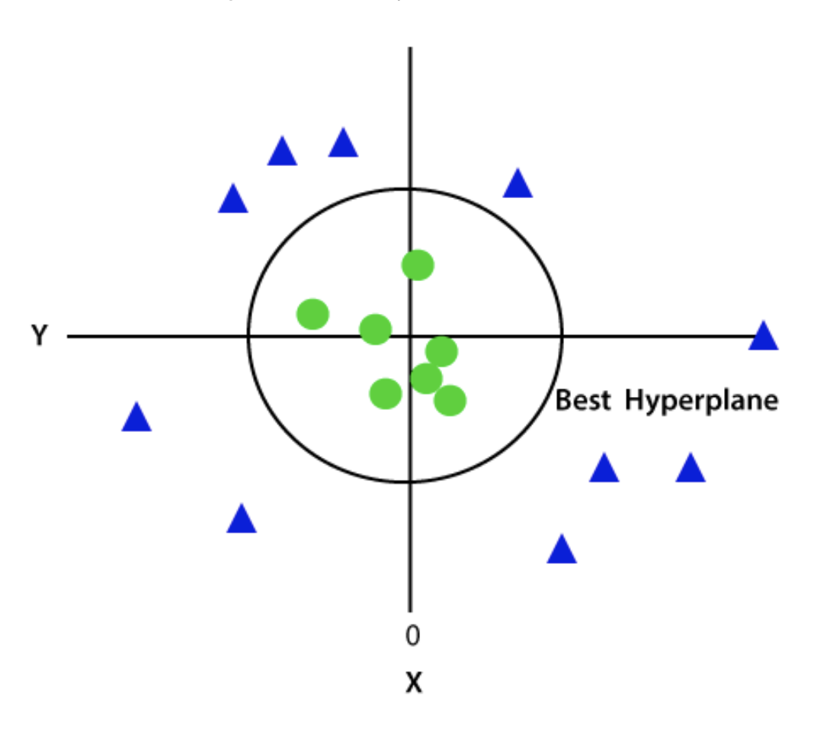
Different types of Support Vector Machine¶
Support vector machines are generally classified into three different groups:
Maximum/Maximal margin classifiers
Support vector classifiers
Support vector machines
Maximal Margin Classifier¶
The Maximal-Margin Classifier is a hypothetical classifier that best explains how SVM works in practice. The numeric input variables (x) in your data (the columns) form an n-dimensional space. For example, if you had two input variables, this would form a two-dimensional space. A hyperplane is a line that splits the input variable space. In SVM, a hyperplane is selected to best separate the points in the input variable space by their class, either class 0 or class 1. In two-dimensions you can visualize this as a line and let’s assume that all of our input points can be completely separated by this line. For example:
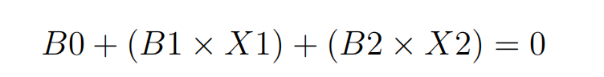
Where the coefficients (B1 and B2) that determine the slope of the line and the intercept (B0) are found by the learning algorithm, and X1 and X2 are the two input variables. You can make classifications using this line. By plugging in input values into the line equation, you can calculate whether a new point is above or below the line.
Above the line, the equation returns a value greater than 0 and the point belongs to the first class (class 0).
Below the line, the equation returns a value less than 0 and the point belongs to the second class (class 1).
A value close to the line returns a value close to zero and the point may be difficult to classify.
If the magnitude of the value is large, the model may have more confidence in the prediction.
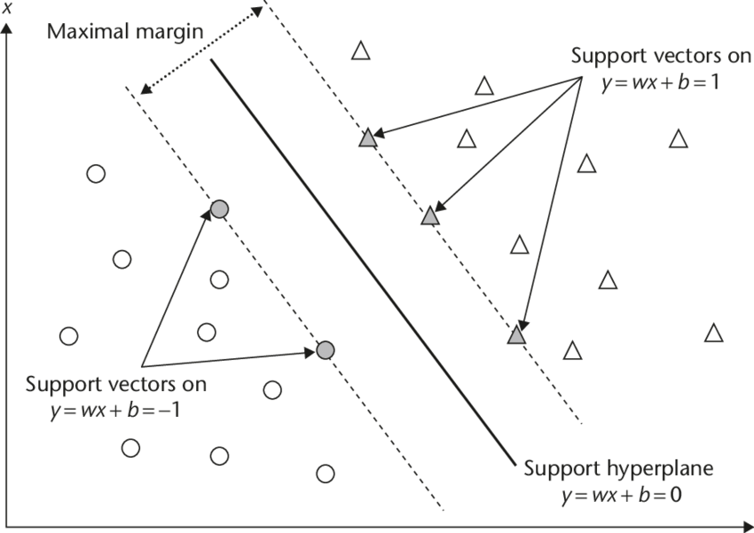
The distance between the line and the closest data points is referred to as the margin. The best or optimal line that can separate the two classes is the line that has the largest margin. This is called the Maximal-Margin hyperplane. The margin is calculated as the perpendicular distance from the line to only the closest points. Only these points are relevant in defining the line and in the construction of the classifier. These points are called the support vectors. They support or define the hyperplane. The hyperplane is learned from training data using an optimization procedure that maximizes the margin.
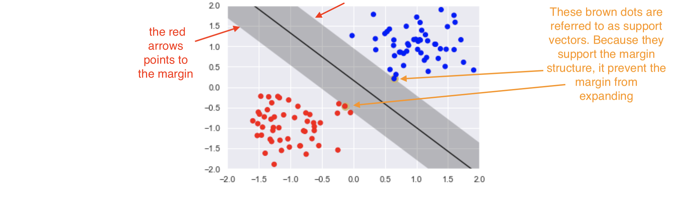
Support vector classifiers¶
Support vector classifiers are an extended version of maximum margin classifiers. Here, some violations are ‘tolerated’ for non-separable cases. This means a best fit can be created. In fact, in real-life scenarios, we hardly find any data with purely separable classes; most classes have a few or more observations in overlapping classes.
The mathematical representation of the support vector classifier is as follows, a slight correction to the constraints to accommodate error terms:
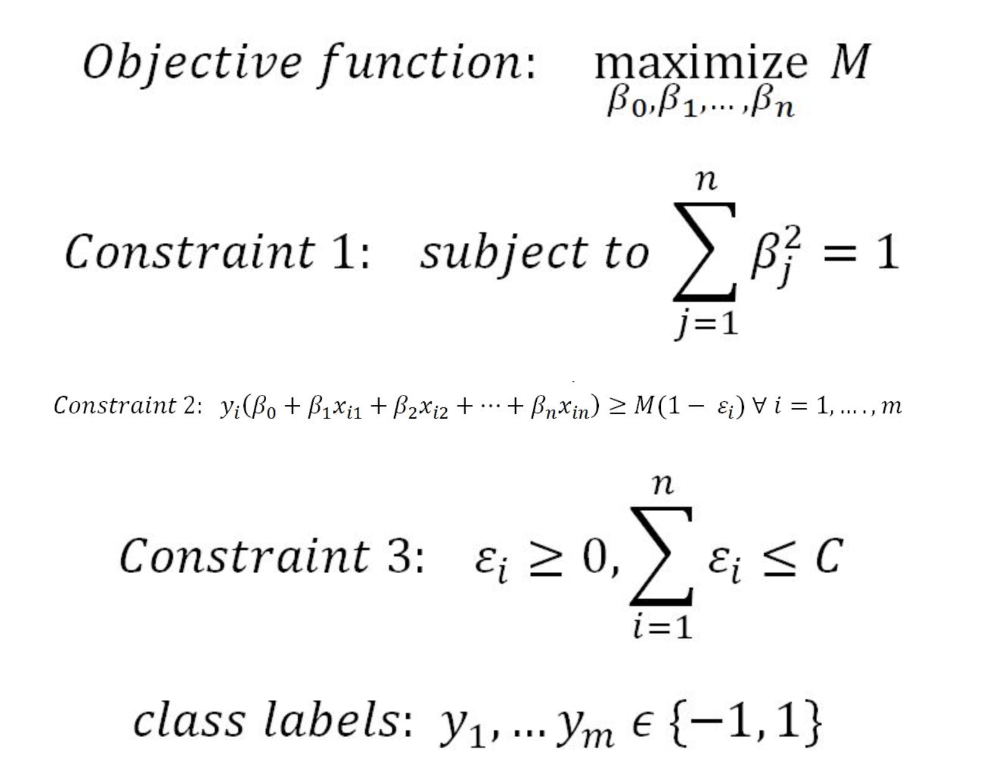
In constraint 4, the C value is a non-negative tuning parameter to either accommodate more or fewer overall errors in the model. Having a high value of C will lead to a more robust model, whereas a lower value creates the flexible model due to less violation of error terms. In practice, the C value would be a tuning parameter as is usual with all machine learning models.
The impact of changing the C value on margins is shown in the two diagrams below. With the high value of C, the model would be more tolerating and also have space for violations (errors) in the left diagram, whereas with the lower value of C, no scope for accepting violations leads to a reduction in margin width. C is a tuning parameter in Support Vector Classifiers:
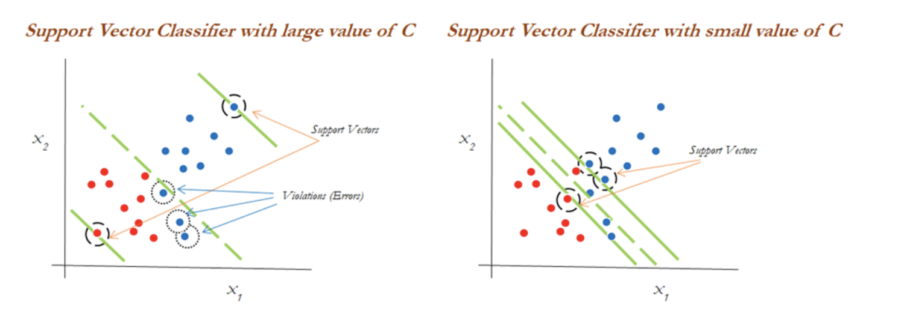
Support vector machines¶
Support vector machines are used when the decision boundary is non-linear. It’s useful when it becomes impossible to separate with support vector classifiers. The diagram below explains the non-linearly separable cases for both 1-dimension and 2-dimensions:
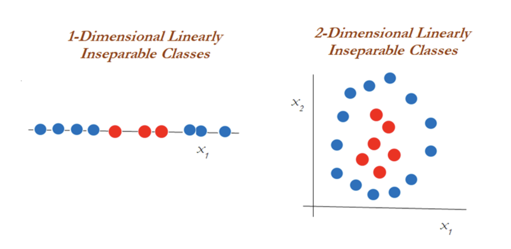
Clearly, you can’t classify using support vector classifiers whatever the cost value is. This is why you would want to then introduce something called the kernel trick.
In the diagram below, a polynomial kernel with degree 2 has been applied in transforming the data from 1-dimensional to 2-dimensional data. By doing so, the data becomes linearly separable in higher dimensions. In the left diagram, different classes (red and blue) are plotted on X1 only, whereas after applying degree 2, we now have 2-dimensions, X1 and X21 (the original and a new dimension). The degree of the polynomial kernel is a tuning parameter. You need to tune them with various values to check where higher accuracy might be possible with the model:
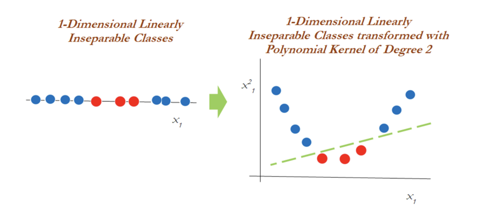
However, in the 2-dimensional case, the kernel trick is applied as below with the polynomial kernel with degree 2. Observations have been classified successfully using a linear plane after projecting the data into higher dimensions:
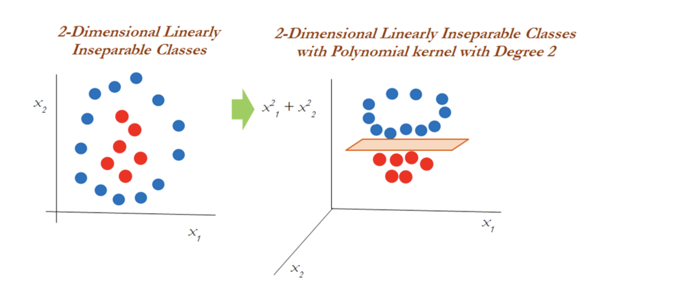
SVM (Kernels)¶
The SVM algorithm is implemented in practice using a kernel. The learning of the hyperplane in linear SVM is done by transforming the problem using some linear algebra, which is out of the scope of this introduction to SVM. A powerful insight is that the linear SVM can be rephrased using the inner product of any two given observations, rather than the observations themselves. The inner product between two vectors is the sum of the multiplication of each pair of input values. For example, the inner product of the vectors [2, 3] and [5, 6] is 2 × 5 + 3 × 6 or 28. The equation for making a prediction for a new input using the dot product between the input (x) and each support vector (xi) is calculated as follows:
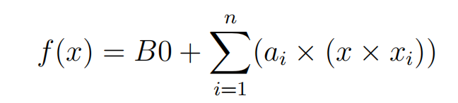
This is an equation that involves calculating the inner products of a new input vector (x) with all support vectors in training data. The coefficients B0 and ai (for each input) must be estimated from the training data by the learning algorithm.
Different types of kernel functions¶
Kernel functions are the functions that, given the original feature vectors, return the same value as the dot product of its corresponding mapped feature vectors. Kernel functions do not explicitly map the feature vectors to a higher-dimensional space, or calculate the dot product of the mapped vectors. Kernels produce the same value through a different series of operations that can often be computed more efficiently.
The main reason for using kernel functions is to eliminate the computational requirement to derive the higher-dimensional vector space from the given basic vector space, so that observations be separated linearly in higher dimensions. Why someone needs to like this is, derived vector space will grow exponentially with the increase in dimensions and it will become almost too difficult to continue computation, even when you have a variable size of 30 or so. The following example shows how the size of the variables grows.
Here’s an example: When we have two variables such as x and y, with a polynomial degree kernel, it needs to compute x2, y2, and xy dimensions in addition. Whereas, if we have three variables x, y, and z, then we need to calculate the x2, y2, z2, xy, yz, xz, and xyz vector spaces. You will have realized by this time that the increase of one more dimension creates so many combinations. Hence, care needs to be taken to reduce its computational complexity; this is where kernels do wonders. Kernels are defined more formally in the following equation:
Linear Kernel¶
The dot-product is called the kernel and can be re-written as:
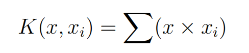
The kernel defines the similarity or a distance measure between new data and the support vectors. The dot product is the similarity measure used for linear SVM or a linear kernel because the distance is a linear combination of the inputs. Other kernels can be used that transform the input space into higher dimensions such as a Polynomial Kernel and a Radial Kernel. This is called the Kernel Trick. It is desirable to use more complex kernels as it allows lines to separate the classes that are curved or even more complex. This in turn can lead to more accurate classifiers.
Polynomial Kernel¶
Instead of the dot-product, we can use a polynomial kernel, for example:
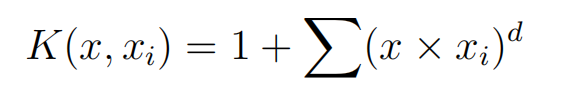
Where the degree of the polynomial must be specified by hand to the learning algorithm. When d = 1 this is the same as the linear kernel. The polynomial kernel allows for curved lines in the input space.
Radial Kernel¶
Finally, we can also have a more complex radial kernel. For example:
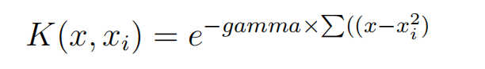
Where gamma is a parameter that must be specified to the learning algorithm. A good default value for gamma is 0.1, where gamma is often 0 < gamma < 1. The radial kernel is very local and can create complex regions within the feature space, like closed polygons in a two-dimensional space.
Data for SVM¶
This section lists some suggestions for how to best prepare your training data when learning an SVM model.
Numerical Inputs: SVM assumes that your inputs are numeric. If you have categorical inputs you may need to covert them to binary dummy variables (one variable for each category).
Binary Classification: Basic SVM as described in this chapter is intended for binary (two-class) classification problems. Although, extensions have been developed for regression and multiclass classification.
SVM in Practice¶
Binary Data set for SVM algorithm¶
Let’s use a binary dataset to train our model, which it will leads to a hyperplane in a 2 dimensional-plane. In this case, we will use customer data about whether the customer had purchased a product.
Import the required modules:
# importing the libraries
import matplotlib.pyplot as plt
import pandas as pd
import seaborn as sns
D:\ProgramData\Anaconda3\lib\site-packages\pandas\compat\_optional.py:138: UserWarning: Pandas requires version '2.7.0' or newer of 'numexpr' (version '2.6.9' currently installed).
warnings.warn(msg, UserWarning)
The next step is to import the data set and divide it into input and output variables.
# importing the dataset
dataset = pd.read_csv('Dataset/customer_purchases.csv')
# split the data into inputs and outputs
X = dataset.iloc[:, [0,1]].values # Selecting all of the rows, then column index 0 and 1 which is Age and Salary
y = dataset.iloc[:, 2].values # Selecting all of the rows, then column index 2 , which is the Purchased column / target column (Label)
---------------------------------------------------------------------------
FileNotFoundError Traceback (most recent call last)
<ipython-input-2-f2654187bb08> in <module>
1 # importing the dataset
----> 2 dataset = pd.read_csv('Dataset/customer_purchases.csv')
3
4 # split the data into inputs and outputs
5 X = dataset.iloc[:, [0,1]].values # Selecting all of the rows, then column index 0 and 1 which is Age and Salary
D:\ProgramData\Anaconda3\lib\site-packages\pandas\util\_decorators.py in wrapper(*args, **kwargs)
309 stacklevel=stacklevel,
310 )
--> 311 return func(*args, **kwargs)
312
313 return wrapper
D:\ProgramData\Anaconda3\lib\site-packages\pandas\io\parsers\readers.py in read_csv(filepath_or_buffer, sep, delimiter, header, names, index_col, usecols, squeeze, prefix, mangle_dupe_cols, dtype, engine, converters, true_values, false_values, skipinitialspace, skiprows, skipfooter, nrows, na_values, keep_default_na, na_filter, verbose, skip_blank_lines, parse_dates, infer_datetime_format, keep_date_col, date_parser, dayfirst, cache_dates, iterator, chunksize, compression, thousands, decimal, lineterminator, quotechar, quoting, doublequote, escapechar, comment, encoding, encoding_errors, dialect, error_bad_lines, warn_bad_lines, on_bad_lines, delim_whitespace, low_memory, memory_map, float_precision, storage_options)
584 kwds.update(kwds_defaults)
585
--> 586 return _read(filepath_or_buffer, kwds)
587
588
D:\ProgramData\Anaconda3\lib\site-packages\pandas\io\parsers\readers.py in _read(filepath_or_buffer, kwds)
480
481 # Create the parser.
--> 482 parser = TextFileReader(filepath_or_buffer, **kwds)
483
484 if chunksize or iterator:
D:\ProgramData\Anaconda3\lib\site-packages\pandas\io\parsers\readers.py in __init__(self, f, engine, **kwds)
809 self.options["has_index_names"] = kwds["has_index_names"]
810
--> 811 self._engine = self._make_engine(self.engine)
812
813 def close(self):
D:\ProgramData\Anaconda3\lib\site-packages\pandas\io\parsers\readers.py in _make_engine(self, engine)
1038 )
1039 # error: Too many arguments for "ParserBase"
-> 1040 return mapping[engine](self.f, **self.options) # type: ignore[call-arg]
1041
1042 def _failover_to_python(self):
D:\ProgramData\Anaconda3\lib\site-packages\pandas\io\parsers\c_parser_wrapper.py in __init__(self, src, **kwds)
49
50 # open handles
---> 51 self._open_handles(src, kwds)
52 assert self.handles is not None
53
D:\ProgramData\Anaconda3\lib\site-packages\pandas\io\parsers\base_parser.py in _open_handles(self, src, kwds)
227 memory_map=kwds.get("memory_map", False),
228 storage_options=kwds.get("storage_options", None),
--> 229 errors=kwds.get("encoding_errors", "strict"),
230 )
231
D:\ProgramData\Anaconda3\lib\site-packages\pandas\io\common.py in get_handle(path_or_buf, mode, encoding, compression, memory_map, is_text, errors, storage_options)
705 encoding=ioargs.encoding,
706 errors=errors,
--> 707 newline="",
708 )
709 else:
FileNotFoundError: [Errno 2] No such file or directory: 'Dataset/customer_purchases.csv'
We can print out the target/output class to verify that our data is a binary set (containing only two output categories).
# printing the target values
print(dataset.Purchased)
0 0
1 0
2 0
3 0
4 0
..
395 1
396 1
397 1
398 0
399 1
Name: Purchased, Length: 400, dtype: int64
Notice that the output class contains either 1 or 0, showing whether the customer had purchased the product or not.
Purchased = 1
Not-Purchased = 0
The next thing we can do as a part of data pre-processing is visually seen the number of those output classes.
# importing the required modules for data visualization
import chart_studio.plotly as py
import plotly.graph_objects as go
import plotly.offline as pyoff
# counting the total output data from purchased column
target_balance = dataset['Purchased'].value_counts().reset_index()
# dividing the output classes into two sections
target_class = go.Bar(
name = 'Target Balance',
x = ['Not-Purchased', 'Purchased'],
y = target_balance['Purchased'])
# ploting the output classes
fig = go.Figure(target_class)
pyoff.iplot(fig)
It shows that more people have not purchased the product.
Training and Testing Linear SVM Model¶
Once we are done with the pre-processing of the data, we can move into the splitting part to divide the data into the testing and training parts.
# training and testing data
from sklearn.model_selection import train_test_split
# assign test data size 25%
X_train, X_test, y_train, y_test =train_test_split(X, y, test_size=0.25, random_state=0)
We have assigned 25% of the data to the testing and 75% to the training parts (by defining the test size = 0.25). That means our model will use 75% of the original data for training, and the remaining portion will be used to test the model to know how accurately our model predicts the output class.
Before feeding the training data to our model, we need to scale the given data so that the outlier will not affect the output class.
# importing StandardScaler
from sklearn.preprocessing import StandardScaler
# scalling the input data
sc_X = StandardScaler()
X_train = sc_X.fit_transform(X_train)
X_test = sc_X.fit_transform(X_test)
Notice that scaling is only applied to the input/independent variables. Once the scaling is done, our data is then ready to be used to train our model.
# importing SVM module
from sklearn.svm import SVC
# kernel to be set linear as it is binary class
classifier_linear = SVC(kernel='linear')
# training the model
classifier_linear.fit(X_train, y_train)
SVC(kernel='linear')In a Jupyter environment, please rerun this cell to show the HTML representation or trust the notebook.
On GitHub, the HTML representation is unable to render, please try loading this page with nbviewer.org.
SVC(kernel='linear')
After the training, we must provide the testing data to see how well our model predicts.
# testing the model
y_pred_linear = classifier_linear.predict(X_test)
We’re storing predicted outputs in the y_pred variable. We can then use these predicted outputs to find the accuracy of our model.
# importing accuracy score
from sklearn.metrics import accuracy_score
# printing the accuracy of the model
print(accuracy_score(y_test, y_pred_linear))
0.88
Visualizing Trained Data¶
Let’s visualize the model trained by the Linear Kernel to see how the model has been trained visually.
# importing the modules
import numpy as np
from matplotlib.colors import ListedColormap
# plotting the fgiure
plt.figure(figsize = (7,7))
# assigning the input values
X_set, y_set = X_train, y_train
# ploting the linear graph
X1, X2 = np.meshgrid(np.arange(start = X_set[:, 0].min() - 1, stop = X_set[:, 0].max() + 1, step = 0.01), np.arange(start = X_set[:, 1].min() - 1, stop = X_set[:, 1].max() + 1, step = 0.01))
plt.contourf(X1, X2, classifier_linear.predict(np.array([X1.ravel(), X2.ravel()]).T).reshape(X1.shape), alpha = 0.75, cmap = ListedColormap(('black', 'white')))
plt.xlim(X1.min(), X1.max())
plt.ylim(X2.min(), X2.max())
# ploting scattered graph for the values
for i, j in enumerate(np.unique(y_set)):
plt.scatter(X_set[y_set == j, 0], X_set[y_set == j, 1], c = ListedColormap(('red', 'blue'))(i), label = j)
# labeling the graph
plt.title('Purchased Vs Non-Purchased')
plt.xlabel('Salay')
plt.ylabel('Age')
plt.legend()
plt.show()
*c* argument looks like a single numeric RGB or RGBA sequence, which should be avoided as value-mapping will have precedence in case its length matches with *x* & *y*. Please use the *color* keyword-argument or provide a 2D array with a single row if you intend to specify the same RGB or RGBA value for all points.
*c* argument looks like a single numeric RGB or RGBA sequence, which should be avoided as value-mapping will have precedence in case its length matches with *x* & *y*. Please use the *color* keyword-argument or provide a 2D array with a single row if you intend to specify the same RGB or RGBA value for all points.
Notice that there is a linear boundary between the two classes because we have specified the Kernel to be linear.
Visualizing Predicted Data¶
Similarly, we can also visualize the predictions of our model, bypassing the testing dataset.
# ploting graph of size 7,7
plt.figure(figsize = (7,7))
# assigning the testing dataset
X_set, y_set = X_test, y_test
# ploting the predicted graph
X1, X2 = np.meshgrid(np.arange(start = X_set[:, 0].min() - 1, stop = X_set[:, 0].max() + 1, step = 0.01),np.arange(start = X_set[:, 1].min() - 1, stop = X_set[:, 1].max() + 1, step = 0.01))
plt.contourf(X1, X2, classifier_linear.predict(np.array([X1.ravel(), X2.ravel()]).T).reshape(X1.shape),alpha = 0.75, cmap = ListedColormap(('black', 'white')))
plt.xlim(X1.min(), X1.max())
plt.ylim(X2.min(), X2.max())
# plotting scattred graph for the testing values
for i, j in enumerate(np.unique(y_set)):
plt.scatter(X_set[y_set == j, 0], X_set[y_set == j, 1],c = ListedColormap(('red', 'blue'))(i), label = j)
# labelling the graphe
plt.title('Purchased vs Not-purchased Predictions')
plt.xlabel('Salary')
plt.ylabel('Age')
plt.legend()
plt.show()
*c* argument looks like a single numeric RGB or RGBA sequence, which should be avoided as value-mapping will have precedence in case its length matches with *x* & *y*. Please use the *color* keyword-argument or provide a 2D array with a single row if you intend to specify the same RGB or RGBA value for all points.
*c* argument looks like a single numeric RGB or RGBA sequence, which should be avoided as value-mapping will have precedence in case its length matches with *x* & *y*. Please use the *color* keyword-argument or provide a 2D array with a single row if you intend to specify the same RGB or RGBA value for all points.
We can consider any testing point in the black area as Not-purchased and any point in the white area as Purchased.
Training and testing nonlinear SVM model¶
We know that the Linear Kernel performs best when the data is linear, but we use other kernels when the information is nonlinear, from the image above we can see that our data is not classified accurately, there is still red dots in the white area and blue dots in the black area, which means there is still some error on the linear algorithm in classifying. Let’s train our model and visualize the results using the non linear algorithm which is more robust and may provide more accurate result, it is the Radial Basis Function kernel.
# importing SVM module
from sklearn.svm import SVC
# kernel to be set radial bf
classifier_nonlinear = SVC(kernel='rbf')
# traininf the model
classifier_nonlinear.fit(X_train, y_train)
# testing the model
y_pred = classifier_nonlinear.predict(X_test)
# importing accuracy score
from sklearn.metrics import accuracy_score
# printing the accuracy of the model
print(accuracy_score(y_test, y_pred))
0.93
Note: the accuracy of our model has increased because the Radial Basis Function kernel has performed well as the data we not linear.
Visualizing trained data(Radial Basis Function kernel)¶
Let’s visualize the classifier trained by the Radial Basis Function kernel.
# plotting the fgiure
plt.figure(figsize = (7,7))
# assigning the input values
X_set, y_set = X_train, y_train
# ploting the linear graph
X1, X2 = np.meshgrid(np.arange(start = X_set[:, 0].min() - 1, stop = X_set[:, 0].max() + 1, step = 0.01), np.arange(start = X_set[:, 1].min() - 1, stop = X_set[:, 1].max() + 1, step = 0.01))
plt.contourf(X1, X2, classifier_nonlinear.predict(np.array([X1.ravel(), X2.ravel()]).T).reshape(X1.shape), alpha = 0.75, cmap = ListedColormap(('black', 'green')))
plt.xlim(X1.min(), X1.max())
plt.ylim(X2.min(), X2.max())
# ploting scattered graph for the values
for i, j in enumerate(np.unique(y_set)):
plt.scatter(X_set[y_set == j, 0], X_set[y_set == j, 1], c = ListedColormap(('red', 'blue'))(i), label = j)
# labeling the graph
plt.title('Purchased Vs Non-Purchased')
plt.xlabel('Salay')
plt.ylabel('Age')
plt.legend()
plt.show()
*c* argument looks like a single numeric RGB or RGBA sequence, which should be avoided as value-mapping will have precedence in case its length matches with *x* & *y*. Please use the *color* keyword-argument or provide a 2D array with a single row if you intend to specify the same RGB or RGBA value for all points.
*c* argument looks like a single numeric RGB or RGBA sequence, which should be avoided as value-mapping will have precedence in case its length matches with *x* & *y*. Please use the *color* keyword-argument or provide a 2D array with a single row if you intend to specify the same RGB or RGBA value for all points.
Visualizing predictions (Radial Basis Function kernel)¶
Let us now visualize the predictions made by the Radial Basis Function kernel. The process will be the same with the same code, except for the dataset(which is the test set).
# ploting graph of size 7,7
plt.figure(figsize = (7,7))
# assigning the testing dataset
X_set, y_set = X_test, y_test
# ploting the predicted graph
X1, X2 = np.meshgrid(np.arange(start = X_set[:, 0].min() - 1, stop = X_set[:, 0].max() + 1, step = 0.01),np.arange(start = X_set[:, 1].min() - 1, stop = X_set[:, 1].max() + 1, step = 0.01))
plt.contourf(X1, X2, classifier_nonlinear.predict(np.array([X1.ravel(), X2.ravel()]).T).reshape(X1.shape),alpha = 0.75, cmap = ListedColormap(('black', 'green')))
plt.xlim(X1.min(), X1.max())
plt.ylim(X2.min(), X2.max())
# plorting scattred graph for the testing values
for i, j in enumerate(np.unique(y_set)):
plt.scatter(X_set[y_set == j, 0], X_set[y_set == j, 1],c = ListedColormap(('red', 'blue'))(i), label = j)
# labelling the graphe
plt.title('Purchased vs Not-purchased Predictions')
plt.xlabel('Salary')
plt.ylabel('Age')
plt.legend()
plt.show()
*c* argument looks like a single numeric RGB or RGBA sequence, which should be avoided as value-mapping will have precedence in case its length matches with *x* & *y*. Please use the *color* keyword-argument or provide a 2D array with a single row if you intend to specify the same RGB or RGBA value for all points.
*c* argument looks like a single numeric RGB or RGBA sequence, which should be avoided as value-mapping will have precedence in case its length matches with *x* & *y*. Please use the *color* keyword-argument or provide a 2D array with a single row if you intend to specify the same RGB or RGBA value for all points.
Any data point in the black area will be classified as not-purchased, and in the green space will be classified as purchased. Using the same method and code, you can also use the polynomial Kernel and visualize its classifier and predictions.
Evaluation of SVM algorithm performance for binary classification¶
A confusion matrix is a summary of prediction results on a classification problem. The correct and incorrect predictions are summarized with count values and broken down by each class. The confusion matrix helps us calculate our model’s accuracy, recall, precision, and f1-score. We can use confusion matrix to evaluate our SVM model.
Linear Kernel Evaluation¶
Let us first visualize the confusion matrix of our model trained by using a Linear Kernel.
# importing the required modules
import seaborn as sns
from sklearn.metrics import confusion_matrix
# passing actual and predicted values
cm = confusion_matrix(y_test, y_pred_linear, labels=classifier_linear.classes_)
# true Write data values in each cell of the matrix
sns.heatmap(cm, annot=True)
<AxesSubplot:>
This output shows that 63 of the Non-purchased class were classified correctly, and 25 of the purchased were classified correctly.
# importing classification report
from sklearn.metrics import classification_report
# printing the report
print(classification_report(y_test, y_pred_linear))
precision recall f1-score support
0 0.90 0.93 0.91 68
1 0.83 0.78 0.81 32
accuracy 0.88 100
macro avg 0.87 0.85 0.86 100
weighted avg 0.88 0.88 0.88 100
The accuracy report for the moel trained by using Linear Kernel is as above code result.
Nonlinear kernel¶
Let us now evaluate the Radial Basis Function kernel trained model using the confusion matrix evaluation metrics
# importing the required modules
import seaborn as sns
from sklearn.metrics import confusion_matrix
# passing actual and predicted values
cm = confusion_matrix(y_test, y_pred, labels=classifier1.classes_)
# true Write data values in each cell of the matrix
sns.heatmap(cm,annot=True)
plt.savefig('confusion.png')
This time we get 64 of the non-purchased classified correctly and 29 purchased class classified correctly. We can also print out the classification report for both of our models.
# importing classification report
from sklearn.metrics import classification_report
# printing the report
print(classification_report(y_test, y_pred))
precision recall f1-score support
0 0.96 0.94 0.95 68
1 0.88 0.91 0.89 32
accuracy 0.93 100
macro avg 0.92 0.92 0.92 100
weighted avg 0.93 0.93 0.93 100
And the classification report for the model trained by using the Radial Basis Function kernel is illustrate on the image above.
Conclusion : We can conclude that by using the non-linear SVM algorithm, we are getting a more accurate result.